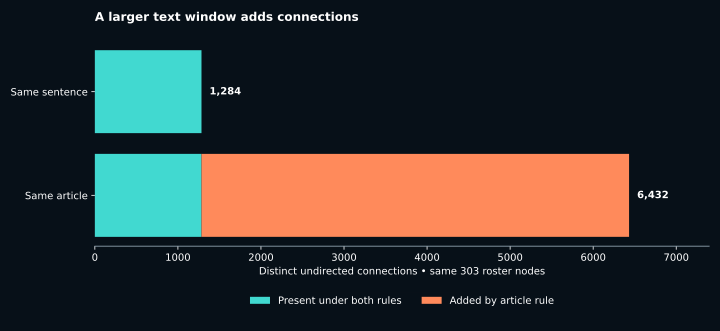

Week 07 · NLP III · Go Nuts
A sentence.
Or a whole story?
How does the Marvel character network change when two names count as connected within the same sentence versus anywhere in the same article?
The text and name matcher stay fixed. Only the co-occurrence window changes. The larger window adds 5,148 edges—and changes what a connection means.
See the comparison ↓01 · One controlled change
The page makes distant mentions neighbours.
An edge means two matched name strings occur in one text unit somewhere in the corpus. It is undirected, binary and has no self-loops. Repeated mentions do not create extra edges. We retain all 303 roster nodes, including unmatched ones. An article’s subject is not automatically added: its name must actually match.
Every sentence connection also exists at article level. The article network has 5.01 times as many edges; 80.0% of its connections never occur within one sentence unit. The edge-set Jaccard similarity is 0.200. This is descriptive overlap, not an accuracy score.

| Measurement | Same sentence | Same article |
|---|---|---|
| Distinct edges | 1,284 | 6,432 |
| Density | 0.028 | 0.141 |
| Isolates | 53 | 31 |
| Components | 54 | 32 |
| Largest component | 250 | 272 |
Density is edges divided by 303 × 302 / 2 = 45,753 possible pairs. Isolates can reflect failed name matching as well as absence of co-mentions; they are not necessarily isolated Marvel characters.
02 · Read the added edges
Sharing an article is a broad relationship.
We selected the two most-supported article-only pairs whose unique title stems contain spaces but no periods (excluding the incarnation-specific Iron Man entry), plus the most-supported pair overall as an error diagnostic. Ties and the first supporting article are chosen alphabetically. This is a readability screen, not proof that multiword names are unambiguous. The independent check found no shared sentence unit for any selected pair across all 303 texts. These examples are selected case studies, not a random or human-labelled sample.
1. Emma Frost × Scarlet Witch
Co-mentioned in 10 articles, but never in one sentence unit under our rule. These separate passages come from Adam Warlock.
As Loki, Emma Frost, Hulk, Ant-Man, Ms. Marvel, and Kang the Conqueror gather together, they find Adam and suggest they exit the Soulworld only for Adam to declare that they need to defeat Devondra first.
Frozen character offsets 24116–24321 (end exclusive).
This causes them to round up Arachknight (a combination of Spider-Man and Moon Knight), Ghost Panther (a combination of Ghost Rider and Black Panther), Green Widow (a combination of Black Widow and She-Hulk), Iron Hammer (a combination of Iron Man and Thor), Man-Thing-Thang-Thoom (a combination of Man-Thing and Fin Fang Foom), Moon Squirrel (a combination of Moon Girl and Squirrel Girl) and Tippysaurus (a combination of Tippy-Toe and Devil Dinosaur), Soldier Supreme (a combination of Captain America and Doctor Strange), Weapon Hex (a combination of Scarlet Witch and X-23), and Fantastic Two members Mister Invisible (a combination of Mister Fantastic and Invisible Woman) and Hot Rocks (a combination of Human Torch and Thing) as well as a saxophone-playing version of Drax the Destroyer.
Frozen character offsets 24321–25117 (end exclusive).
Emma Frost is listed among a group gathering around Adam. Scarlet Witch appears in a description of the composite character Weapon Hex. The broader window connects these separate references, not a demonstrated meeting between Emma and Wanda.
2. Doctor Strange × Misty Knight
Co-mentioned in 9 articles, but never in one sentence unit under our rule. These separate passages come from Black Cat (Marvel Comics).
Doctor Strange later removed the lingering effects from Spider-Man, inadvertently transforming Felicia's bad-luck power into heightened feline physical abilities, including claws and enhanced agility.
Frozen character offsets 6966–7167 (end exclusive).
During the Civil War, Felicia registered under the Superhuman Registration Act and joined Misty Knight's Heroes for Hire, later aiding the Fearless Defenders.
Frozen character offsets 7637–7796 (end exclusive).
Doctor Strange changes Felicia’s powers; a separate passage describes her joining Misty Knight’s team. The shared subject is Black Cat. These passages do not establish a direct Doctor Strange–Misty Knight interaction.
3. Iron Man (Ultimate Marvel character) × Speed (character)
Co-mentioned in 43 articles, but never in one sentence unit under our rule. These separate passages come from Abomination (character).
Iron Man uses technology taken from the Order of the Shield to teleport the Abomination into space.
Frozen character offsets 11113–11213 (end exclusive).
The Abomination is similar to the Hulk in terms of stamina, speed, and durability, including his healing factor.
Frozen character offsets 13292–13405 (end exclusive).
This is a false-entity warning: “speed” is an ordinary attribute here, not evidence for the character Speed. The text also does not establish that “Iron Man” means the Ultimate incarnation. The matcher creates the edge, but the passages do not support that character-level interpretation.
03 · Names are a measurement choice
Two checks you can repeat yourself.
Download the frozen article ZIP. The passages below are exact extracts, with zero-based character offsets into the decoded text. Search in the frozen files rather than relying on today’s Wikipedia wording.
Find “storm of electrical bolts”
Open marvel_pages/Surge_(Marvel_Comics).txt in the frozen ZIP and search for this phrase. Current Wikipedia page (may differ).
With no training or practice in the use of her powers, Noriko's body automatically absorbs all nearby electricity and, once fully charged, releases it in a storm of electrical bolts.
storm refers to an electrical discharge, not necessarily the character Storm; a case-insensitive dictionary cannot tell.
Offsets 1807–1990; also saved in results.json.
Find “Ororo Munroe”
Open marvel_pages/Storm_(Marvel_Comics).txt in the frozen ZIP and search for this phrase. Current Wikipedia page (may differ).
Born Ororo Munroe to a tribal princess of Kenya, and a Black-American photojournalist father, Storm was raised in Harlem, New York City, and Cairo, Egypt.
The real-name alias is mapped to the same roster node as Storm; aliases are not additional nodes.
Offsets 814–968; also saved in results.json.
| Matching treatment | Sentence edges | Article edges |
|---|---|---|
| Title stems + three aliases (main) | 1,284 | 6,432 |
| Title stems only | 1,283 | 6,432 |
| Remove surface “storm”; keep Ororo Munroe | 1,246 | 6,298 |
Excluding “storm” removes 38 sentence edges and 134 article edges. That is a sensitivity check, not an estimate of false positives: it removes genuine character mentions too. Aliases can recover missed mentions, but this small dictionary is incomplete and cannot distinguish every alternate incarnation.
04 · Exact method
One matcher, two windows.
- Use the official frozen
marvel_pages.zipandweek1_nodes.tsv; verify all 303 page IDs equal the roster IDs. Retain the full text, including editorial sections. - Remove a trailing parenthetical qualifier from each roster display name. Exclude shortened forms shared by multiple roster IDs instead of assigning them arbitrarily. There are 10 such ambiguous forms, listed in results.json, including Spider-Man, Wolverine and Ghost Rider. We exclude these surfaces rather than choose an incarnation arbitrarily. Nodes remain in both networks.
- Match remaining phrases case-insensitively with Unicode word boundaries. Prefer longest alternatives at a position and use non-overlapping matches. Preserve internal punctuation and hyphens; do not stem words or match pronouns.
- Add exactly three aliases: Ororo Munroe → Storm; Wanda Django Maximoff → Scarlet Witch; Natasha Romanoff → Black Widow (Natasha Romanova). Each was found in the target’s own frozen article. No surname-only expansion is used. The complete dictionary is downloadable.
- Split sentence units at newlines or whitespace following a period, question mark or exclamation mark. This is a transparent heuristic, not a linguistic sentence parser: abbreviations can split too early. For articles, use the complete page. Find mentions once per page, then allocate complete spans to sentence offsets; do not count a span crossing a boundary in either sentence. Protect the abbreviations Ms., Mr., Dr. and St. from splitting.
- Connect all distinct matched roster IDs within each unit, then take the union across the corpus. Save supporting-unit counts separately in edges.csv. Both networks use the identical matcher, including identical ambiguity errors. Of 303 roster nodes, 281 have at least one matched mention; the remaining 22 are retained.
This is a dictionary-based mention network, not trained NER, full entity resolution, a hyperlink graph or evidence of friendship. The earlier 12-name pilot has been replaced by this full-roster analysis; its numbers are not reused.
05 · What we checked—and what remains uncertain
A broader edge needs a narrower claim.
Executed checks: fixed archive SHA-256; exact roster/page coverage; no unknown nodes or self-loops; sentence edges contained in article edges; exact source offsets; independent re-splitting and matching for all three selected added pairs; alias-to-node deduplication and a boundary check showing “thunderstorm” does not match “Storm”. A second isolated run reproduces the saved outputs. The SVG figure was rendered and visually inspected; local resource links and static HTML were checked. Browser layout testing was blocked by the environment’s Chromium socket restrictions.
We found that larger windows connect names discussed in separate passages. That makes article co-occurrence useful for broad editorial association, while sentence co-occurrence is more local. Neither rule proves an interaction. Long pages create many possible pairs, sentence segmentation is approximate, and ordinary words, shared mantles, aliases, titles and alternate universes can confuse the matcher. The three source examples and two alias/ambiguity checks do not establish corpus-wide precision or recall. No statistical significance, human gold standard or causal effect is claimed.
AI assisted the code, executed analysis, source inspection and writing; no student review is implied. See AI methods. This follows exercise 7.13. Teams sharing and feedback to another group remain separate activities.
pip install -r scripts/requirements-week7.txt
python scripts/analyse_week7.py
python scripts/analyse_week7.py --output-dir /tmp/week7-check
python -m http.server 8000Run from the repository root. The script regenerates results, edge and matching tables, and the figure. Reconcile the static article if you change the analysis. The archive hash is 36023ca077053b3df5bd55630754cb514c3f9dbecbd70afcb2283e5bcc0017ee. Source: DTU course data. Quoted text is attributable to the linked Wikipedia articles’ contributors under applicable CC BY-SA terms; consult their histories for authorship. Extracts are selected from the frozen snapshot; the full corpus is not republished here.
Rerunnable codeDependenciesResults & source offsetsAll edgesAll matching rulesFigure SVG
All weeks →